Labelled Sky
Real night skies (an 1885 glass plate, a Dürer woodcut, a moon daguerreotype) catalogued with blunt neo-brutalist stickers. Each product is a constellation traced from its real logo. The idea in one line: precise work, placed on the chart where you can find it. Spark words: fracture, tension, flow.
Cream, forest, brass
Seed hue 0° survives as Signal: one dot meaning “live”. Never a fill.
#F9F2E2 · page
#EDE2CC · sticker back
#1A4A32 · ink, borders
#05170F · plates
#C2964D · lines, shadow
#E8CB84 · on night
#D4407C · live dot only
#6C9173 · paused, retired
Three voices
Archivo · wdth 125 · wght 850
OFL · variable, 93 KB subset
Martian Mono · 500/700
OFL · 38 KB subset
17 tools · about 100 email providers · open source (AGPL)
Instrument Serif Italic
OFL · 22 KB subset
The A-constellation
Five stars, three tension lines, one brass spark at the apex. Lines stop short of each star, as on an engraved chart. The tile is a sticker: chunky border, hard brass shadow.


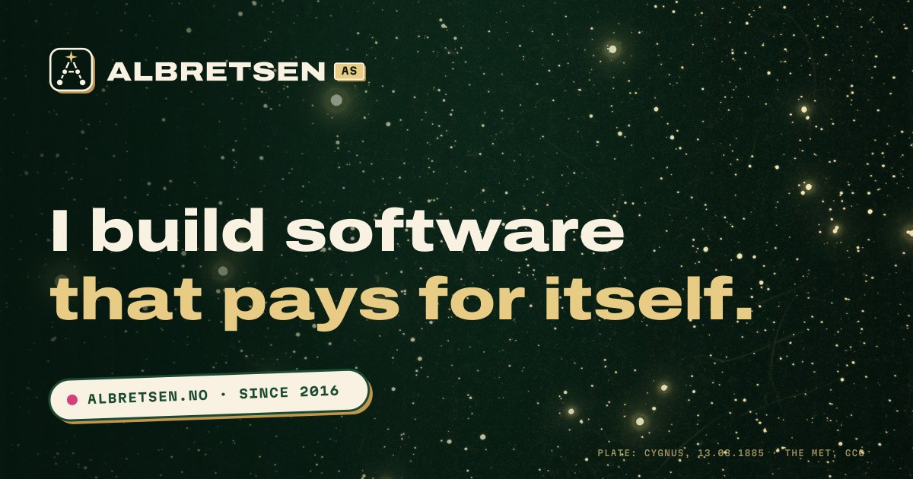

Four plates
Every image is a real public-domain object or generated in code, then graded into the palette. Sizes in hero/sizes.json.
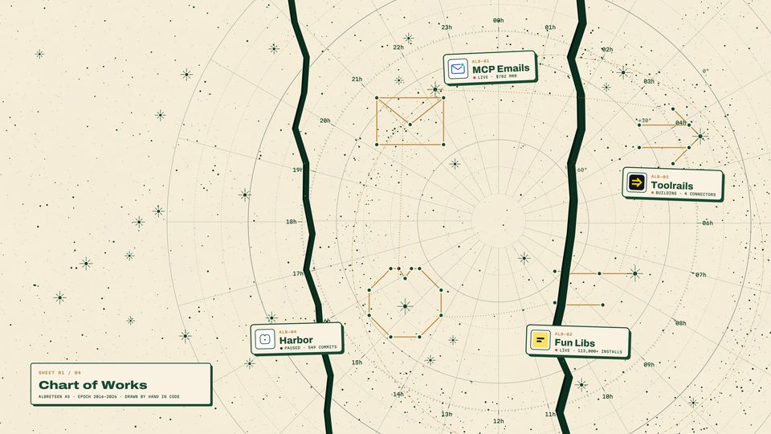
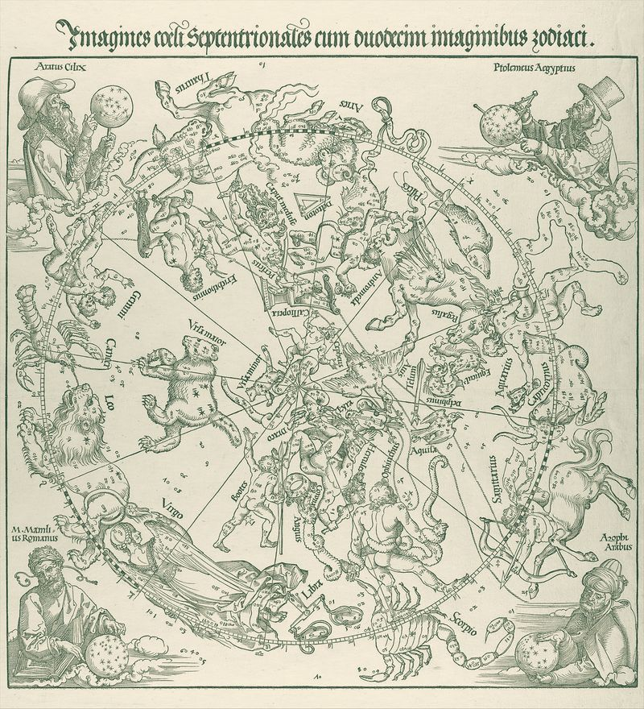
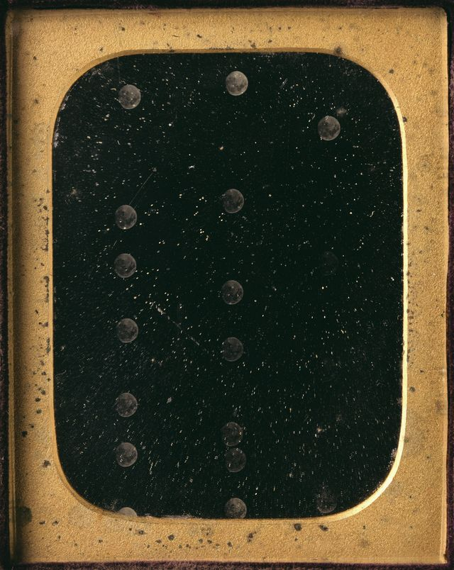
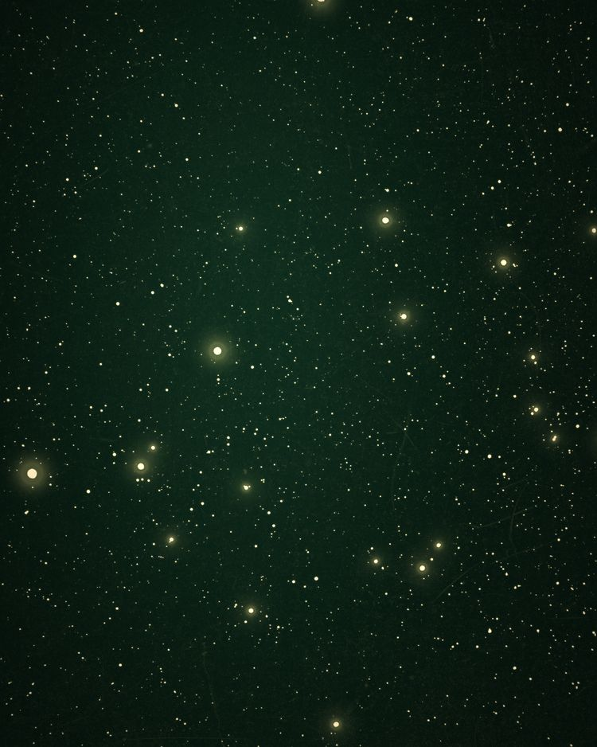
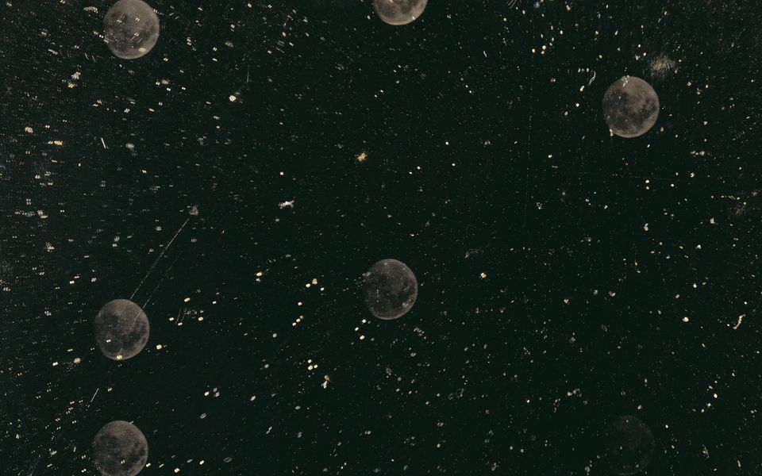
Stickers on the plate
Real logos, unchanged, on die-cut stickers pressed onto the 1885 sky. Above each: its constellation, traced from the logo's own vertices. Hover: peel & lift.


Texture, labels, hidden detail
Hover the plate below: a brass loupe reveals the Dürer engraving hiding under the photograph. Five detail crops ship in extras/details/.
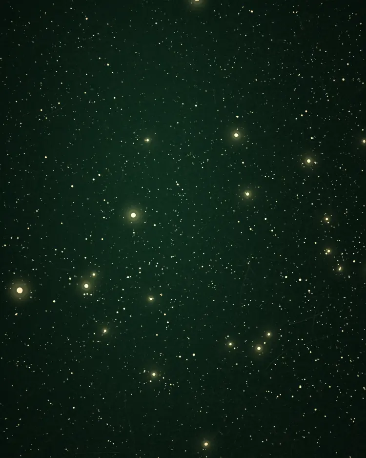
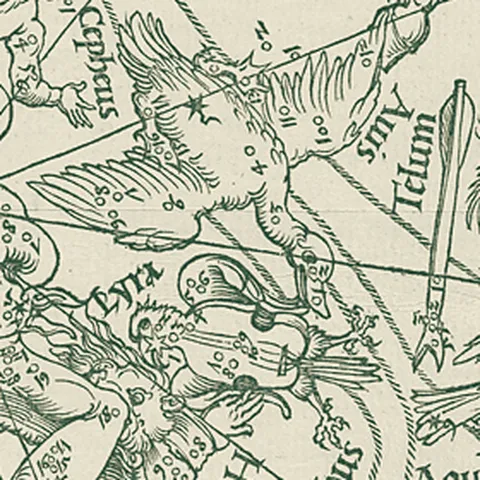
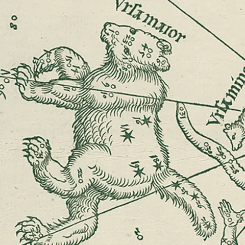
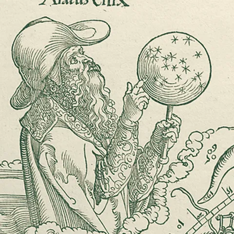
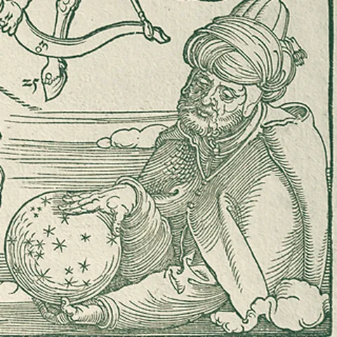
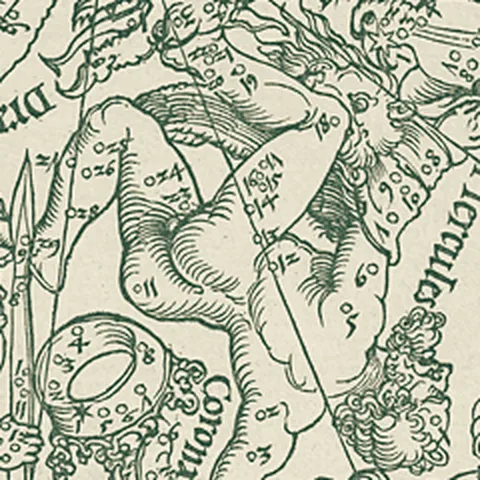
Star Catalogue
2,188 particles, each a real star measured from the 1885 plate. They drift on a flow field; choose a product and the nearest stars are pulled out on springs into its constellation. Threads thin as they stretch. Hover a star for its catalogue entry. interactive/star-catalogue.js · full-screen demo
Five signatures
All Web Animations API, springs baked into linear(). motion.js + motion.css. Everything resolves to its end state under reduced motion.
1 · Press-on
Sticker drops from 1.3× with a tilt, overshoots on a spring, then the hard shadow arrives as if pressed down.
2 · Peel & lift
Shadow grows 4→10px, the sticker leans toward you and a corner folds back to the paper side.
3 · Tension line
Lines draw star to star in engraving order; each star springs in as its line arrives.
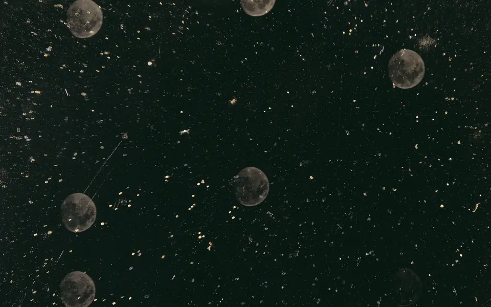
4 · Brass loupe
Hover opens a sprung circular window onto a hidden layer that follows the pointer.
5 · Fracture snap
Three clip-path shards slide apart and snap back (composite: add). Once per page, for emphasis.